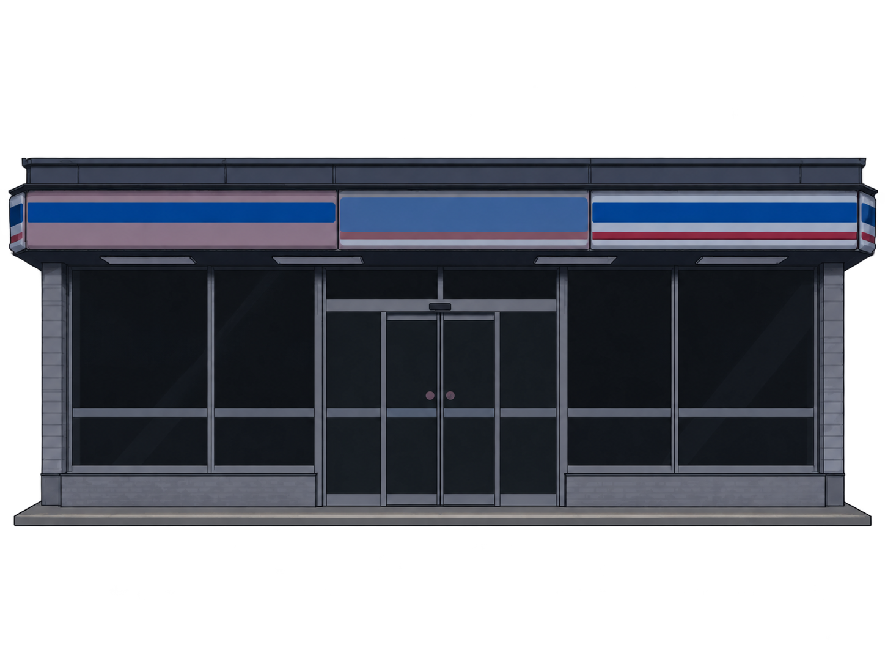
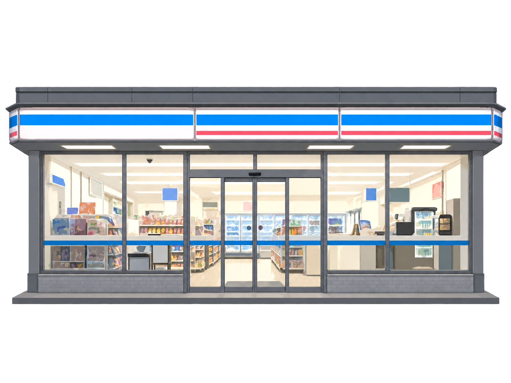
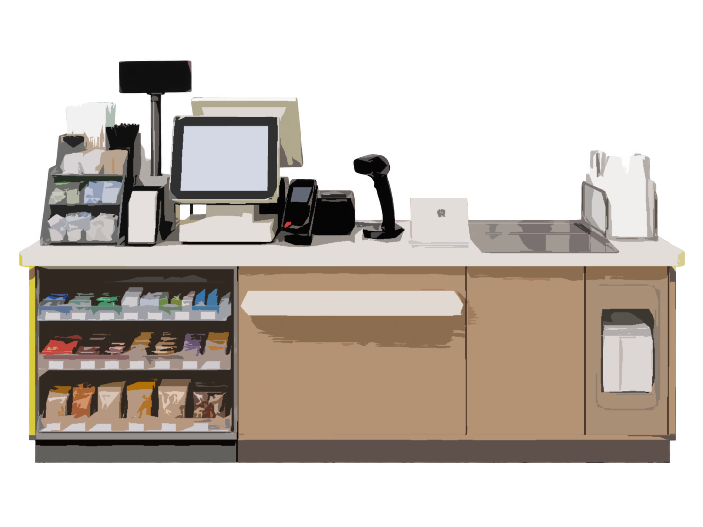

While the city sleeps


Scroll
Push open this door, and the night shift begins.

The shop is quiet,
but the work never stops.
He isn’t the only one still awake.
On city nights, there are others keeping watch too
3:20 AM
His body is already yearning for sleep,
but the work isn’t over yet.
The city has woken up; after having ‘dinner’, he, however, is preparing to go to sleep.
12369☀
Two clocks,
two different times.
12369☾
Another night
Another shift
The lights come on, as usual